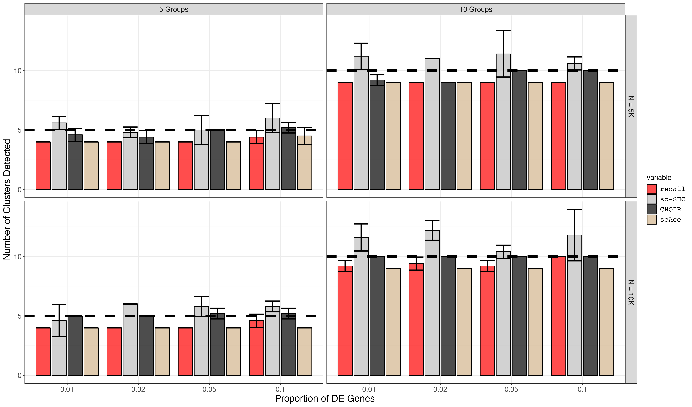

7. Rare Cell Type Marker Gene Titration Simulation Plotting (Supplemental Figures S10)
07_plotting_S10.RmdFirst, we load all of the data from the simulations.
df5 <- read.csv("marker_genes_simulations5.csv", row.names = 1)
df10 <- read.csv("marker_genes_simulations10.csv", row.names = 1)
df <- rbind(df5, df10)
scace_df <- read.csv("scAce_results.csv", row.names = 1)
df <- melt(df, measure.vars = c("recall_num_clusters", "scSHC_num_clusters", "CHOIR_num_clusters" ))
scace_df <- melt(scace_df, measure.vars = c("scAce_num_clusters"))
df <- rbind(df, scace_df)
df <- subset(df, num_cells < 20000)
df$de_probs <- factor(df$de_probs)Next, we summarize the mean and standard deviation of the number of clusters.
df <- df %>% dplyr::group_by(across(all_of(c("num_groups", "num_cells", "de_probs", "variable")))) %>% dplyr::summarize(
mean = mean(value),
sd = stats::sd(value))We plot the summarized data.
small_text_size <- 12
large_text_size <- 16
linewidth = 2
pt_size = 4
facet_labels <- c(
`5` = "5 Groups",
`10` = "10 Groups",
`20` = "20 Groups",
`5000` = "N = 5K",
`10000` = "N = 10K",
`20000` = "N = 20K"
)
p <- ggplot(df) +
geom_bar(aes(x=de_probs, y=mean, fill=variable), stat="identity", position=position_dodge2(), alpha = 0.7, colour = 'black') +
geom_errorbar(aes(x=de_probs, ymin=mean-sd, ymax=mean+sd), position=position_dodge2(), size=1) +
facet_grid(rows=vars(num_cells), cols = vars(num_groups), labeller=as_labeller(facet_labels)) +
geom_hline(aes(yintercept=num_groups), linetype="dashed", size=linewidth) +
expand_limits(y=0) +
theme_bw() +
ggplot2::scale_fill_manual(values = c("red", "grey", "black", "tan"), labels = c('recall','sc-SHC','CHOIR', "scAce")) +
ggplot2::scale_y_continuous(breaks = breaks_pretty()) +
#ggplot2::scale_x_continuous(breaks = c(0.01, 0.02, 0.05, 0.1)) +
#scale_y_continuous(breaks=seq(0,150,30)) +
ggplot2::xlab("Proportion of DE Genes") +
ggplot2::ylab("Number of Clusters Detected") +
ggplot2::labs(color = "Method") +
#ggplot2::annotate("label", x = 10, y = annotation_pos, label = "Num. True Groups", size = 6) +
ggplot2::theme(axis.text = ggplot2::element_text(size = small_text_size),
axis.title = ggplot2::element_text(size = large_text_size),
strip.text = ggplot2::element_text(size = small_text_size),
legend.text = ggplot2::element_text(size = small_text_size, family = "Courier"),
legend.title = ggplot2::element_text(size = small_text_size))
p
ggsave(filename = "marker_gene_titration.png", p, width = 3.4 * 1440, height = 2 * 1440, units = 'px')